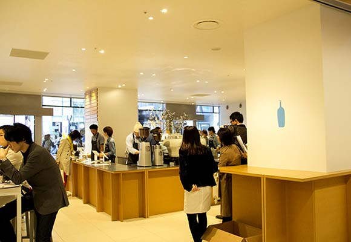

Sushimaru(鮨丸)
Blue Bottle Coffee
Toraya cafe an
stand
東京大人味發見
Day5-2015.07.27 < 新 宿 車 站>
店名：Blue Bottle Coffee
營業時間：11:00-22:00
住址：東京都新宿區新宿4-1-6(NEWoMan 1F)
網址：
https://bluebottlecoffee.com/
這間是一間在美國連鎖咖啡在日本好像只有在東京開設的
兩間咖啡店，超好喝～期待超久的。

back